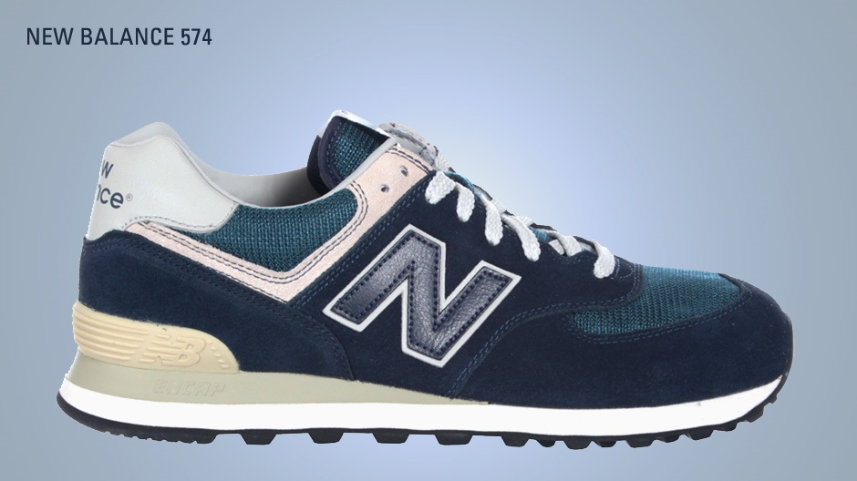
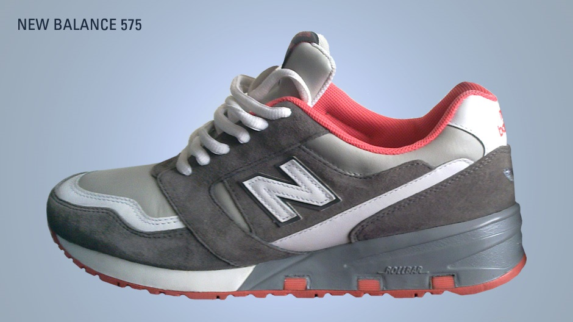
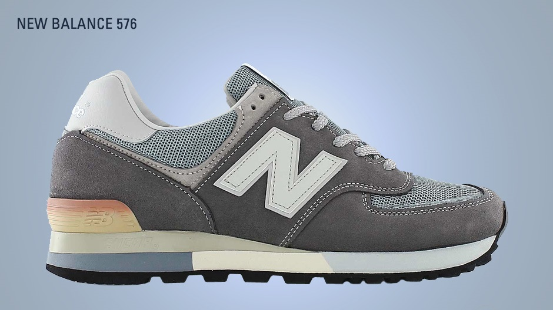
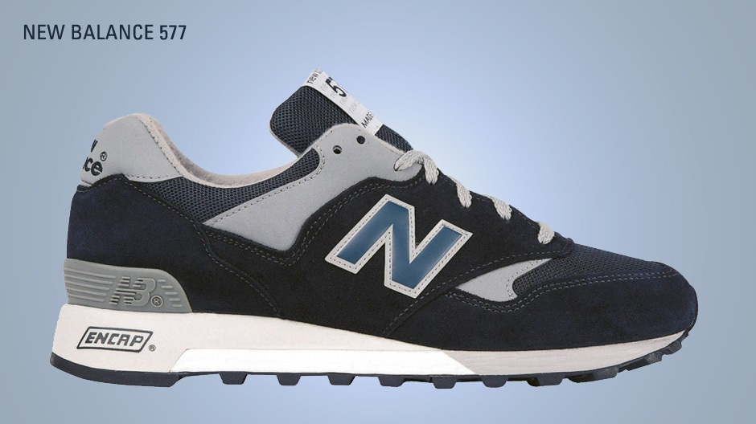

Klasifikasi produk New Balance menggunakan nomer jadi hal yang unik di New Balance/ Bebeda dengan kebanyakan merk yang memberikan nama di setiap rilisannya. Hal itu dilakukan agar konsumen lebih memahami produk mana yang paling memenuhi kebutuhannya.Perusahaan yang didirikan William J. Rilley ini tengah fokus mempromosikan New Balance 247. Siluet kasual modern bertema sporty yang punya harga terjangkau. Konsep itu sama dengan yang dilakukan New Balance ketika memperkenalkan seri 574 pada 1988 silam. Selain New Balance 247, saya juga mendapati rak khusus seri klasik di bagian belakang. Di sana, terdapat seri 574, 373, dan lainnya. Jumlahnya terbatas untuk seri itu-itu saja. Saya hanya terpaku pada kehadiran New Balance 998. Seri klasik yang berdiri sendiri di antara semua sepatu yang dipajang. Kejadian ini sangat disayangkan. Padahal, mereka memproduksi sepatu dengan peruntukan yang berbeda-beda. Sejenak otak saya melayang membayangkan berbagai seri klasik selain New Balance 998 yang mengagumkan itu. Secara garis besar, New Balance adalah perusahaan sepatu bersejarah. Didirikan William J. Rilley pada 1906, perusahaan berlogo “NB” ini fokus membuat keperluan olahraga yang memenuhi kebutuhan atlet secara spesifik. Sejak olahraga jadi gaya hidup, New Balance kian apik memproduksi sepatu olahraga. Meski berinovasi dengan menghasilkan seri baru berteknologi mutakhir, seri klasik New Balance seakan tak lekang oleh waktu. Inilah seri-seri klasik terbaik versi Mainbasket.
Rp. 560.000 |
Rp. 450.000 |
Rp. 600.000 |
Rp. 900.000 |
|  |  |  |  |
| Inilah seri paling legendaris dari New Balance. Sepatu yang awalnya ditujukan bagi petenis tanah liat ini semakin lekat dengan gaya hidup masyarakat urban kelas menengah. Harganya yang terjangkau jadi kunci kesuksesan seri ini. Walau begitu, Anda masih bisa mendapati seri langka 574 dengan harga cukup tinggi. Belum lagi seri eksklusif 574 yang diproduksi di Amerika Serikat. Selain itu, 574 telah dilengkapi sol berjenis ENCAP. ENCAP adalah sol buatan New Balance yang terdiri atas busa EVA dibungkus dengan cangkang plastik poliuteran. New Balance mengatakan bahwa perpaduan ini bisa menambah stabilitas pemakainya ketika berlari. | Bagi Anda penikmat lari segala medan (trailrunning), cobalah memakai 575. Sol sepatu ini lebih tebal dengan teknologi ROLLBAR khas New Balance. Walau tak setenar 574, namun seri 575 punya tempat tersendiri bagi penggemarnya. Sepatu ini jadi salah satu best-seller New Balance sepanjang masa. | Sementara seri 574 identik dengan sepatu buatan Amerika Serikat, seri 576 jadi seri kebanggaan bagi Inggris. Ya, eksklusivitas New Balance 576 hadir dari proses pembuatannya dilakukan oleh pengrajin sepatu terlatih dari Flimby, Inggris. Pertama kali dikenalkan pada 1988, seri 576 adalah sepatu pengembangan seri 574 yang dibuat lebih meruncing ke depan. Struktur sol ENCAP-nya pun berbeda. Seri 576 menggunakan tiga lapis sol EVA berjajar yang diperkuat dengan cangkang plastik poliuteran lebih besar. | Seri ini juga jadi salah satu seri eksklusif Flimby, Inggris. Bentuknya yang meruncing ke depan jadi pioneer sepatu lari modern. Struktur sol ENCAP-nya meredam berat serta cangkang di bagian tumit membantu pemakainya untuk lebih seimbang. Sepatu ini dibuat lebih sempit sehingga serasa mencengkeram dengan erat. Kini, seri 577 sering dijadikan basis kolaborasi eksklusif New Balance dengan berbagai pihak. Omong-omong, tentara elit Israel pernah memesan sepatu ini secara khusus karena dirasa paling cocok dengan kebutuhan mereka. |